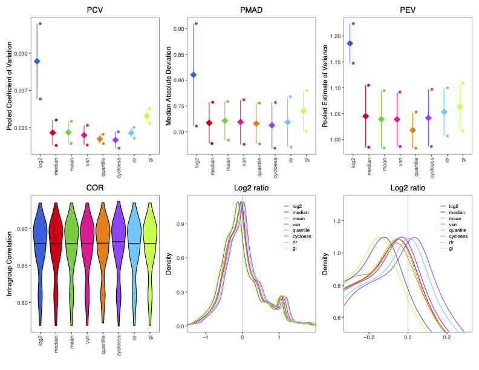
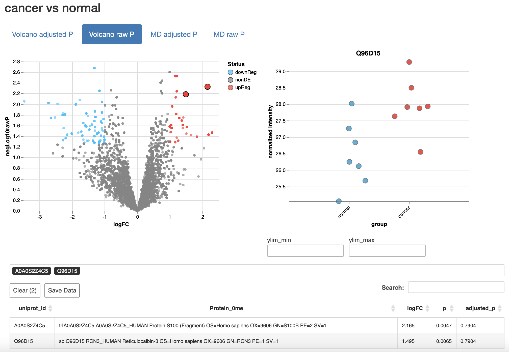

Tutorial: proteomics analysis using proteoDAv1.0
tutorial.RmdInstallation
If you have this vignette, you should already have
proteoDA installed. If not, installation is simple.
proteoDA is not yet on CRAN, but it can be installed from
GitHub using the devtools package:
install.packages("devtools")
devtools::install_github("ByrumLab/proteoDA",
dependencies = TRUE,
build_vignettes = TRUE)If you run into issues during installation, try setting
build_vignettes = FALSE: building the vignettes requires
extra software dependencies.
Once proteoDA is installed, load it:
library(proteoDA)Data Import and Requirements
proteoDA stores data and results in a
DAList, a list object with a special structure and class
(its an S3 class). DA stands for “differential abundance” indicating the
type of analysis is for protein abundance. A DAList
contains 7 items, which are called slots: data, annotation, metadata,
design, eBayes_fit, results, and tags. Generally, you only need to worry
about the first three slots, and proteoDA will take care of
the rest. They are:
data- A data frame or matrix containing protein intensity values for each sample. The rows contain data from a specific protein, and columns represent individual samples. The names of the columns must match the row names of the metadata (see below).
annotation- A data frame containing annotation information for the proetins. These could be protein accession numbers, description, gene symbols, etc. There is only one required item: the annotation data must contain a column titled “uniprot_id” (no capital letters!), and the values in that column must be unique to each row. This is how
proteoDAkeeps track of the unique proteins in your experiment.metadata- A data frame containing sample information such as sample name, group, gender, batch, etc. The row names of the metadata must match the column names of the data.
Data import example
Using some example data, we’ll walk through how to prepare existing
data for use with proteoDA. Our example data consists of
two files:
DIA_data.csv.gz, a compressed, comma-separated value file containing a mix of protein intensity and annotation data, similar to data you might receive from, for example, a Scaffold DIA file.metafile.csv, a comma-separated value file containing sample information and metadata.
These examples come bundled with the proteoDA package
and can be imported using standard R functions:
input_data <- read.csv(system.file("extdata/DIA_data.csv.gz", package = "proteoDA"))
sample_metadata <- read.csv(system.file("extdata/metafile.csv", package = "proteoDA"))
head(input_data)The input_data is a data frame with 9089 rows, each
corresponding to one protein, and 21 columns. The first 4 columns give
protein annotation information: a UniProtID, some protein info from the
database search, etc. The remaining 17 columns give the per-sample
protein intensities.
head(sample_metadata)The sample_metadata is a dataframe with 17 rows giving
information on each sample, including the column name in the
input_data which corresponds to that sample, the sample ID,
the sample batch (all the same, in this case), a “group” column
describing the sample type, three pooled samples used for characterizing
all proteins during the database search, seven samples from normal,
non-cancercous tissue, and seven samples from cancer tissue. The goal of
our experiment is to find proteins that are differentially abundant in
cancer compared to non-cancer cells.
For making our DAList object, we need to separate out
the protein annotation and protein intensity data in the
input_data data frame. There are a number of ways to do
this in R, but an easy way is to subset each data frame
based on the indicies of the desired columns:
intensity_data <- input_data[,5:21] # select columns 5 to 21
annotation_data <- input_data[,1:4] # select columns 1 to 4When creating data frames of intensity data and annotation
information for a DAList object, it is important to ensure
that the rows are in the right order: the DAList() function
used to create a DAList keeps the rows in the order
provided. If you provide the intensity and annotation data in different
orders, they will not match up properly. The method above does not
change the row orders.
Finally, before creating our DAList object, we can
return to the two requirements we mention above:
The annotation data should contain a column name “uniprot_id”, which contains a unique entry for each row/protein. Our example data already fulfills this criteria.
The row names of the metadata should equal the column names of the protein intensity data. We can check this:
rownames(sample_metadata)## [1] "1" "2" "3" "4" "5" "6" "7" "8" "9" "10" "11" "12" "13" "14" "15"
## [16] "16" "17"At the moment, the row names are just numbered: DAList()
won’t be able to match up the rows in sample_metadata to
the columns in intensity_data. Fortunately, the column name
information is already available in the metadata, we can just assign it
to the rownames of sample_metadata:
rownames(sample_metadata) <- sample_metadata$data_column_nameNow, we’re ready to make our DAList of the raw data.
raw <- DAList(data = intensity_data,
annotation = annotation_data,
metadata = sample_metadata,
design = NULL,
eBayes_fit = NULL,
results = NULL,
tags = NULL)You can examine the individual elements of the DAList
using the $ operator in R:
# Look at the intensity data
raw$data
# Look at the metadata
raw$metadataSample and protein filtering
Before analysis, we need to do some filtering of the raw data. First, we can filter out some unneeded samples. Our raw data contains three pooled samples, made from pooling all the samples together. We do not want to analyze these pooled samples for differential abundance.
proteoDA has a function, filter_samples()
that can be used to remove samples from a DAList object.
All functions in proteoDA have reference pages, lets take a
look at the reference for filter_samples():
?filter_samplesThis function takes two arguments: an input DAList and a
condition, which is a logical expression describing which samples should
be kept. In our case, we want to remove the pool samples and keep all
non-pool samples. So, let’s keep all samples where the “group” column in
the sample metadata does not equal “Pool”:
filtered_samples <- filter_samples(raw, group != "Pool")Next, we may want to filter out proteins with a large amount of
missing data. proteoDA provides two functions to do this:
filter_proteins_by_group() and
filter_proteins_by_proportion(). With
filter_proteins_by_group(), the user specifies the minimum
number of samples and groups for which a protein must have non-missing
data: e.g., a protein must be present in at least 4 samples in at least
1 group to be kept. filter_proteins_by_proportion() is
similar, but the user specifies a minimum proportion, instead of a
minimum number. This is useful for cases when sample sizes are unequal
across groups.
It is important to note that these filtering functions only filter on
missing values (NA), not zero values. The distinction between missing
values and zeroes is important, as the limma models we use
to estimate differential abundance will treat NA and zero differently. A
missing value is ignored, while zero values are included in the
statistical model and estimations of log fold-change. Functionally, a
zero in the data tells the limma model that we know that a
protein was not present. This is generally not the case with mass
spectrometry data (there are many reasons a protein may not have been
detected, even when it is present), so generally zero values should be
converted to missing data. However, there are cases where it may be
appropriate. In a comparison between tissues from a wild-type and a
knockout strain, for example, you may know that the protein associated
with the knockout gene is absent and a 0 would be correct.
proteoDA has two functions to help you manage missing
values in the way that is appropriate for your data:
zero_to_missing() will convert 0 values to missing data,
while missing_to_zero() will convert missing values
(usually NA, but you can specify other values depending on how your data
are encoded) to zero.
In our example data, many proteins have zero intensity, but we know from the experiment type, instrument it was run on, etc., that these do not necessarily represent proteins that are definitely not present. Therefore, we can convert these to missing values, and then filter out proteins with too much missing data. A good rule of thumb is to require non-missing data in ~2/3 of the replicates in one group. For our example data, with 7 replicates per group, we will require non-missing data for at least 4 samples:
# Convert missing values
filtered_samples <- zero_to_missing(filtered_samples)
filtered_proteins <- filter_proteins_by_group(filtered_samples,
min_reps = 4,
min_groups = 1,
grouping_column = "group")The printed message from proteoDA tells us that 203
proteins were removed.
If there are any specific proteins you’d like to remove (e.g., known
contaminants, proteins you are uninterested in, etc), you can use the
filter_proteins_by_annotation() function to remove proteins
based on their annotation data.
Most proteoDA functions take a DAList as
input and return a DAList as output. This makes it easy to
pipe multiple commands together into data processing pipelines. Below,
we can take our raw data, remove the pool samples, convert missing
values, and filter out missing proteins all in one pipeline (filtering
by proportion this time, just as an example):
filtered <- raw |>
filter_samples(group != "Pool") |>
zero_to_missing() |>
filter_proteins_by_proportion(min_prop = 0.66,
grouping_column = "group")By default, the output of the function on the left-hand side of the
pipe operator, |>, is passed as input to the first
argument of the function on the right hand side of the pipe (see the
pipe operator documentation at ?|> for more
information). For functions in proteoDA, the first argument
is always the input DAList, which makes piping commands
together easy.
Normalization
After filtering, the raw intensity data should be normalized, so that
technical variability between samples doesn’t affect the inference of
differential abundance. Normalization is a complex topic, and there are
a wide variety of possible normalization methods. proteoDA
includes 8 popular normalization methods and a tool to help you choose
the best normalization method: write_norm_report().
The write_norm_report() functions applies all 8
normalization methods to a dataset and outputs a PDF report containing
plots of different normalization metrics. Specifically, it evaluates the
pooled coefficient of variance (PCV) within sample groups, the pooled
median absolute deviation (PMAD) within sample groups, the pooled
estimate of variance (PEV) within sample groups, the pairwise
correlation of sample intensities (COR) within sample groups, and the
pairwise ratios of average log2-transformed intensities between
groups.
# This will save in your current working directory by default, but
# you can use the output_dir argument to specify a different output.
write_norm_report(filtered,
grouping_column = "group",
output_dir = "01_QC_report",
filename = "normalization.pdf",
overwrite = T,
suppress_zoom_legend = FALSE,
use_ggrastr = FALSE)The first page of the PDF output should look like this:

In general, you want to pick a normalization method that has low levels of intra-group variability (PCV, PMAD, and PEV) and high levels of intra-group correlation (COR), with a log2 density ratio that is roughly symmetric around 0. The second page of the normalization report (not shown) gives MA plots of average expression against the average log2 ratio between groups: a good normalization method should have a relatively flat trend (orange line).
It is important to note that, although we need to include a grouping
variable to calculate within-group statistics for evaluating
normalization methods, the actual calculation of these
normalizations is done across all samples without regard to grouping
when using the default proteoDA global options. The default
global options may not be appropriate if the data set includes a small
number of molecules, less than a few hundred, and/or most of the
variables are differentially abundant. Thus, though providing different
grouping columns when creating the normalization report might affect
your evaluation of normalization methods, the underlying normalized
values will be the same.
For these example data, cyclic loess normalization (“cycloess” in the
report) looks like a good choice, though all the normalization methods
besides simple log2 transformation (unnormalized data) perform
similarly, which is generally a good sign. Now that we’ve chosen the
normalization method, we can normalize our data. This will overwrite the
raw data with normalized data, so it’s a good idea to save this as a new
DAList object:
# methods = log2, median, mean, vsn, quantile, cycloess, rlr, gi
normalized <- normalize_data(filtered,
norm_method = "cycloess")For more information on normalization, check out this paper on
normalization, or proteiNorm, an
interactive normalization evaluation tool on which proteoDA
is based.
Quality control report
Once the data have been normalized, you can explore the quality and
structure of the data using the write_qc_report() function.
This function creates and saves a variety of diagnostic plots: violin
plots of per-sample intensities; PCAs, dendrograms, and correlation
heatmaps to show similarity between samples and how they cluster
together, and heatmaps which show the amount of missing data across
samples.
write_qc_report(normalized,
color_column = "group",
label_column = NULL,
output_dir = "01_QC_report",
filename = "QC_report.pdf",
overwrite = T,
top_proteins = 500, # number of most variable proteins
standardize = TRUE,
pca_axes = c(1,2), # first 2 PCs
dist_metric = "euclidean", # stats::dist for options
clust_method = "complete", # stats::hclust for options
show_all_proteins = F) # only proteins with missing dataSee the reference page of the write_qc_report() for more
options on how to customize these reports.
In the case of this report, the PCA plot and dendrogram indicate that
two samples, Sample_07 and Sample_08, are slight outliers that do not
cluster with the rest of the samples. Depending on what information you
have on your samples and your overall sample sizes, you may choose to
remove such samples, by going back to the filter_samples()
function. Note: you would want to re-run the downstream protein
filtering and normalization functions as well. For this tutorial, we
will move forward without further filtering.
Specifying a statistical design
Now, we’re ready to specify the statistical analysis to perform.
proteoDA uses a model formula syntax that should be
familiar to users of other R modelling functions and packages (e.g,
lm() or the lme4 package). Models take the
form ~ terms. Unlike other models, no left-hand side is
needed: the response variable to be modeled is the protein
abundance.
proteoDA can fit models with and without intercepts
(e.g., ~ group or ~ 0 + group, respectively).
Models may contain multiple terms (e.g., ~ group + sex),
and those terms could be interactive (e.g., ~ group * sex)
or additive (e.g., ~ group + sex). proteoDA
also has limited support for mixed models with random effects: users can
include a single random-effect term that influences the intercept (e.g.,
~ group + (1 | batch)).
The model fitting in proteoDA is performed using
functions from the limma R
package. We highly recommend this guide
from the limma team on specifying experimental designs and
contrasts: though the syntax is slightly different, much of the material
applies to proteoDA as well.
For this tutorial, we will demonstrate fitting the same statistical model both with and without an intercept term.
Intercept model
In our example data, we’re interested in differential abundance between normal tissue and cancer tissue, as specified in the “group” column of the metadata. We can add a statistical design to examine differential abundance across groups using an intercept model:
intercept <- add_design(normalized,
design_formula = ~ group)This intercept model will estimate two quantities for each protein:
- The intercept, which will be the average expression in one of the two groups and is called the reference group.
- The difference in average expression between the reference group and the second group. This second quantity is the differential abundance that we’re interested in.
There is an important issue to consider, which group will be the
reference group? proteoDA follows the R
default, in which the category that is first in alphabetical order is
the reference group. In this example data, that means the reference
group is the cancer group, which we can see by examining the design
matrix:
head(intercept$design$design_matrix)## Intercept normal
## Sample_01_0325.mzML 1 1
## Sample_02_0147.mzML 1 1
## Sample_03_4085.mzML 1 1
## Sample_04_0039.mzML 1 1
## Sample_05_5198.mzML 1 1
## Sample_06_7066.mzML 1 1Thus, the differential abundance would be the change in normal tissue relative to cancer tissue. In this case, we probably want the opposite: we want to know how proteins in cancer tissue are changed relative to normal tissue. To address this, we can convert the “group” column of the metadata into a factor and set the levels ourselves, with “normal” as the first level and “cancer” as the second:
We can remake our design matrix:
intercept <- add_design(normalized,
design_formula = ~ group)
head(intercept$design$design_matrix)## Intercept cancer
## Sample_01_0325.mzML 1 0
## Sample_02_0147.mzML 1 0
## Sample_03_4085.mzML 1 0
## Sample_04_0039.mzML 1 0
## Sample_05_5198.mzML 1 0
## Sample_06_7066.mzML 1 0Now, the reference group is the normal group and the model will estimate the differential abundance in cancer tissue.
No intercept model
Alternatively, we could specify our model slightly differently, using a no-intercept model:
no_intercept <- add_design(normalized,
design_formula = ~0 + group)With no intercept, the model will estimate the average expression level in each group:
head(no_intercept$design$design_matrix)## normal cancer
## Sample_01_0325.mzML 1 0
## Sample_02_0147.mzML 1 0
## Sample_03_4085.mzML 1 0
## Sample_04_0039.mzML 1 0
## Sample_05_5198.mzML 1 0
## Sample_06_7066.mzML 1 0However, we aren’t interested in the average level of expression in
each group: we want the difference in expression between normal and
cancer tissue. By default, proteoDA will estimate each
model term in the design matrix. However, as in limma, we
can use contrasts to override this behavior and estimate different terms
that are derived by performing mathematical operations on the terms in
the design matrix. For our example differential abundance analysis, this
is simple: we want to calculate the difference between the average
expression in cancer and normal tissue, cancer - normal. We
can use the add_contrasts() function to do this:
no_intercept <- add_contrasts(no_intercept,
contrasts_vector = "cancer_vs_normal = cancer - normal")Contrasts should follow this form:
contrast_name = contrast - operation, where “contrast name”
will be the new name for the term being estimated and the “contrast
operation” section gives the mathematical operation used to create a new
contrast, such as subtracting the normal term from the cancer term, as
in this example. In some cases, a user may have many contrasts they want
to calculate, and typing them all by hand could be problematic. In that
case, users can specify contrasts in a .csv file:
no_intercept <- add_contrasts(no_intercept,
contrasts_file = system.file("extdata/contrasts.csv", package = "proteoDA"))Contrasts can be quite elaborate, and can include more than two
terms. Again, this guide is
a great resource. It also provides guidance on when to use which type of
model. In general, intercept models are better when there are multiple
statistical categories and each only has two levels (e.g., a design like
~ treatment + sex, where treatment is a case/control factor
and sex is male or female).
No-intercept models are more intuitive when there is one factor with
many categories that you want to compare between (e.g., a design like
~ tissue, where tissue contains tissues A, B, and C and you
want to compare A to B, B to C, and A to C).
For this tutorial, we’ll continue using the intercept model.
Fitting the model and getting results
The next two functions in the proteoDA pipeline are
quite simple: fit_limma_model() performs model fitting, and
takes no arguments besides a DAList.
extract_DA_data() extracts statistical results tables from
the model fit and adds them to the results slot of the
DAList. The two functions can be run separately or piped
together as seen in the examples below.
# Splitting up functionality
# First, fit the model
fit <- fit_limma_model(intercept)
# Extract results ---------------------------------------------------------
results <- extract_DA_results(fit,
pval_thresh = 0.05,
lfc_thresh = 1,
adj_method = "BH",
extract_intercept = F)Pipe the two functions together.
final <- intercept |>
fit_limma_model() |>
extract_DA_results(pval_thresh = 0.05,
lfc_thresh = 1,
adj_method = "BH",
extract_intercept = F)The results slot of a DAList holds a list,
where each element in the list is a named data frame providing the
results for that statistical term. Intercept terms are ignored by
default, but this can be overridden. Users can also change the
p-value and log2 fold-change thresholds necessary for
differential abundance to be declared statistically significant: check
out the reference pages for both functions for more information.
You can explore the statistical results within R using this command:
head(final$results$cancer)## logFC CI.L CI.R average_intensity t
## A0A087X1C5 -0.16248488 -1.791810 1.4668402 22.05255 -0.21349831
## A0A0B4J1Y9 -1.23638777 -2.850684 0.3779081 24.78467 -1.63968643
## A0A0C4DH29 -0.05343303 -1.664516 1.5576499 25.99399 -0.07100372
## A0AVT1 -0.41202774 -1.078520 0.2544642 26.16835 -1.32349039
## A0FGR8 -0.13495942 -1.141352 0.8714336 24.34038 -0.28709444
## A0MZ66 -0.22050798 -1.123489 0.6824729 23.62655 -0.52279926
## B P.Value adj.P.Val sig.PVal sig.FDR
## A0A087X1C5 -4.638226 0.8339567 0.9754861 0 0
## A0A0B4J1Y9 -4.534958 0.1229083 0.7697252 0 0
## A0A0C4DH29 -4.640094 0.9443797 0.9926667 0 0
## A0AVT1 -4.567822 0.2064732 0.8059173 0 0
## A0FGR8 -4.636536 0.7781642 0.9754861 0 0
## A0MZ66 -4.627913 0.6091311 0.9501156 0 0The result tables provide information on the estimated log2
fold-change (logFC) of protein abundance, statistical results
(confidence intervals, t and B statistics), significance levels (raw and
adjusted p-values), and columns indicating whether a protein is
considered differentially abundant according to the specified
p-value and log2 fold-change thresholds (1 indicates
up-regulated/more abundant, -1 indicates down-regulated/less abundant,
and 0 indicates no statistically significant differential abundance).
proteoDA also provides functions for exporting these
results to .csv files, Excel spreadsheets, and interactive
reports that make exploring your results simple.
Outputing results
You can output statistical results into tabular data files with
write_limma_tables(). This function saves .csv
and .xlsx files of the statistical results.
write_limma_tables(final,
output_dir = "02_DA_results",
overwrite = T,
contrasts_subdir = NULL,
summary_csv=NULL,
combined_file_csv = NULL,
spreadsheet_xlsx = NULL,
add_filter = T)Users can also generate both static PDF plots and interactive HTML
reports of their results with write_limma_plots():
write_limma_plots(final,
grouping_column = "group",
table_columns = c("uniprot_id","protein_info"),
title_column = "uniprot_id",
output_dir = "02_DA_results",
tmp_subdir = "tmp",
height = 1000,
width = 1000)Both functions will save their output to the current working directory by default, but the output directory, file names, and a variety of other options can be set by the user (see their reference pages).
The report contains interactive volcano and MD plots using both raw and adjusted p-values, and also contains an interactive table with protein annotation and statistical results:

These interactive reports make use of the excellent
Glimma R
package for interactive visualizations.